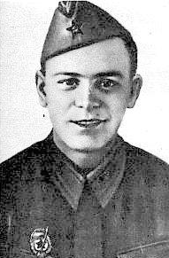

|
Сталинградский снайпер.

Анатолий Иванович Чехов родился 2 мая 1923 года в пос. Бондюжск Челнинского кантона, Татарская Автономная Советская Социалистическая Республика. В 1936 г. семья Чеховых переехала в Казань, где с июня 1939 г. Анатолий работал подручным слесаря в монтажном цехе Казанской фабрики кинопленки.
5 апреля 1942 г. Анатолий был призван в армию, где получил направление в московскую школу подготовки снайперов-инструкторов, после чего был рапределён в 39-й гвардейский стрелковый полк 13-й гвардейской стрелковой ордена Ленина дивизии генерала Александра Родимцева, которая в сентябре 1942 г. положила начало коренного перелома в Сталинградской битве. За время уличных боев с 21 сентября по 10 октября 1942 года снайпер 3-й стрелковой роты 1-го батальона 39-го полка Анатолий Чехов уничтожил тридцать солдат и одного офицера противника, за что был представлен к ордену Красного Знамени, который получил 6 ноября 1942 г. На тот момент на его счету было 55 убитых солдат и офицеров противника. О подвигах Сталинградского снайпера страна узнала из рассказа «Сталинградская боль» Василия Гроссмана, опубликованного 16 ноября в газете «Красная звезда». За проявленный героизм и высокое воинское искусство, приведшее к победе в битве за Сталинград, Анатолий Чехов, в числе четверых военнослужащих 62-й армии, был представлен к присвоению звания Героя Советского Союза, однако самолёт с представлениями к награде и званиям был сбит и до Москвы не долетел.
После Сталинграда Анатолий Чехов принимал участие в боях за Курск, Орёл, Белгород. За период с октября 1942 г. по 28 января 1943 г. на снайперском счету Чехова были 265 (по некоторым источникам 256) уничтоженных солдат и офицеров противника. В 1943 г. в боях под Киевом Анатолий получил второе ранение, взрывом ему оторвало стопу ноги (по некоторым источникам ранение обеих ног Чехов получил в бою под Курском). В 1944 г. после лечения Чехов был комиссован, решением врачебно-трудовой экспертной комиссии (ВТЭК) получил 3-ю группу инвалидности и вернулся в Казань, где работал газосварщиком на местном электромеханическом заводе. 22 г. боевые товарищи и сослуживцы Анатолия считали его погибшим, только в 1965 г. стало известно, что Анатолий Чехов жив. О знаменитом снайпере были сняты документальные фильмы, появились публикации в прессе. Анатолий Иванович умер 6 июня 1967 г., похоронен Чехов на Арском кладбище в Казани.
|